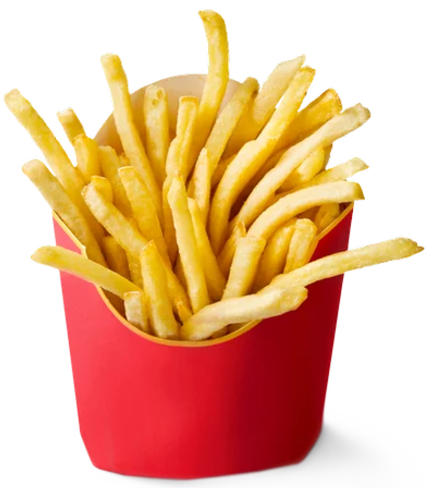
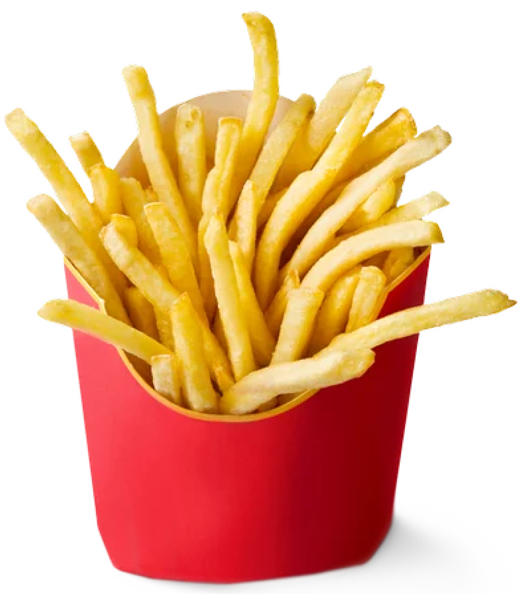

I’m Ankita Murali and I am an aspiring UI/UX designer. I love the colour purple as you can see the whole website’s theme! I also love eating food and I have a very quirky personality.
I am currently pursuing my bachelor’s in design from PES University, Bangalore. I was always passionate about art ever since I was a young girl. I always loved doodling, drawing on walls (which definitely landed me in trouble, haha). Went to many competitions, participated in many events etc.
After I finished school, I decided to choose design as my career path and have loved this journey ever since! I have learnt so many new things and gained some amazing experiences, spoken to many different designers etc.
I now have a new way of looking at everything and that is a designer’s point of view. Everywhere I go now, I observe the design, colours, features of everything present in front of me and it just amazes me every single time. This field will never have a full-stop and I learn more as I go on this journey.
It's me, hi! I'm the problem it's me..
PS:HUGE SWIFTIE
 


.png)